About Faster Than Light, and why I love it.
Faster than Light is a real-time strategy rouge like game. It was created by a indie studio called Subset Games. The premise of the game is that in the midst of a war between a xenophobic rebel faction and the Galactic Federation, you are piloting a ship which belongs to the Federation, and is carrying critical information about how to defeat the rebels. While being pursued by the rebel fleet, you must fight your way through 8 sectors, which may be cilvilian, nebula, or hostile territories. Sector 9 is taken over by rebels, but you must reach the Federation headquarters and defeat the rebel boss ship before they destroy the base in order to win.
Though I don't consider myself a 'gamer', people have referred to me as such because of the amount of time I have spent playing FTL. The reason FTL quickly became my favorite game is because of how challenging it is. The average player can expect to win < 10% of games. As the loading screen says: "Losing is part of the fun!".
Alien Races

There are 8 different Alien races in FTL. They each have starting stats which can be leveled up: Piloting, Engines, Sheilds, Weapons, Repair, and Combat. Each race has their pros and cons, and they all have unique events in the game which are unlocked by having them as part of your crew. The best crew is a diverse one with many different species. The Maximum crew size is 8.
Humans

Humans are the most boring of the races. Not to mention the rebels are made up of mostly human scum. To be fair, they do have their merits. Well, one at least: Humans are fast learners, their stats level up fast.They also only have one special event, while other species have many.
Engi

Engis are engineers, they are mostly made of machinery. They are a great asset to your crew because they are an intelligent race, and their repair speed is double that of any other race. The downfall of Engi is that they are fragile, and their combat damage inflicted is halved. Engis are most useful to have in the engine room, piloting, or shields, as those are most important to repair quickly. It is important to have a strong crew member on board, or drones so Engi can avoid conflict.
Mantis

Mantis are probably one of my personal favorite Alien race to have on my crew. They are in general a hostile race, and are out for themselves. However, occasionally you can find a Mantis who supports The Federation. Mantis are warriors. They deal 150% the amount of damage, and their speed is 1.2X than that of other races. The downfall of Mantis is that their repair speed is halved. So it is best to have crew with faster repair speed, or a repair drone. Mantis are great to be used as boarding crew, they can be transported to an enemy ship and kill the enemy. This is beneficial because you can save your weapons and redirect power, and you can get more scrap and items if you destroy the enemy crew and not the ship.
Rockmen

In my opinion, Rockmen are the most difficult species to play. They are a very aggressive, violent race, although as with the Mantis, you occasionally run into friendly Rockmen. Rockmen are a resilient and strong race. They are immune to fire damage, and their health is 150 as opposed to 100 like the other races. The downfall of Rockmen is that their speed is halved. I find this is be inconvenient and not worth the benefits. Due to my personal playing styles, I have a lot of close calls. Which is made much worse by having slow crew members.
Zolton

Zoltons are a species which is made of mostly pure energy. They are an ally of the Engi, and they are conflicted about The Federation. They are a peaceful, just people, and avoid conflict when possible. The Zolton, being made of mostly energy, have the ability to provide one bar of power to the system in the room they are in at any given time. They also explode upon death and deal 15 damage to enemies in the room. The downfall of Zolton is that their health is much lower that other races, and just 70 hp. Although to me, the Zolton aren't as useful as other species, they are intelligent species, and have created ways to make up for their faults by creating a stronger shield which is equip on most of their ships.
Slug

The Slug races tends to keep to themselves, though when they are encountered they should be approached with caution. Slugs are deceitful and greedy. They reside mostly in nebula sectors, and are assumed to be up to no good when encountered in other sectors. If you happen to end up with a Slug crew member, they are beneficial, especially for navigating nebula sectors. Slugs have telepathic abilities, which allow them to have more vision when sensors are down. They are able to detect the location of crew on enemy ships, and they are able to see any room which is touching the room they are currently standing in. This is beneficial because sensors do not work inside of nebulas. Because of this ability, Slugs are also immune to mind control, which is available in the Advanced Edition of FTL.
Crystal

The Crystal race are the ancestors of the Rockmen. However, the Crystal race denounced the Rockmens violent ways and isolated themselves from the galaxy. They are very rare and the only way to obtain a Crytal crew member is by happening upon a series of special events which will unlock a single Crystal crew member. Crystal crew members have a Lockdown ability, which can lockdown a room they are in for 12 seconds. This can com ein handy is there is enemy crew on your ship and you need to protect certain systems. As with Rockmen, they are immune to fire damage, and their suffocation damage is halved. They also have increased health points at 125. Their only downfall is that speed is 20% reduced.
Lanius

Lanius is also a very rare race. Lanius are a metallic species, and they rely on leaching minerals to survive. Their society often hibernates for many years until they encounter a significant metal deposit, and they mostly keep to themselves when they are not in hibernation. The war has awoken the Lanius race in the Advanced Edition of Faster Than Light. Due to the Lanius biology, they leach oxygen out of any room they are in, which depending on your crew can be a good or bad this. Because of this, they take no damage from lack of oxygen. They also have a reduced movement speed. Though they are an interesting race, I am not a huge fan of Lanius crew members.
Spaceships

There are ten different ships, each with 3 different payouts. You starting crew and resources depend on which ship you choose. The ships in order in the picture are: The Kestrel Cruiser, The Engi Cruiser, The Federation Cruiser, The Zolton Cruiser, The Matis Cruiser, The Slug Cruiser, The Rock Cruiser, The Stealth Cruiser, The Crystal Cruiser, and not pictured is the Lanius Cruiser. All ships start with  Piloting and
Piloting and  Engines systems. Most ships start with
Engines systems. Most ships start with  doors,
doors,  sensors,
sensors,  medbay,
medbay,  oxygen,
oxygen,  sheilds, and weapons. These Systems can be updated any time the ship is not in danger through the ship info screen.
sheilds, and weapons. These Systems can be updated any time the ship is not in danger through the ship info screen.
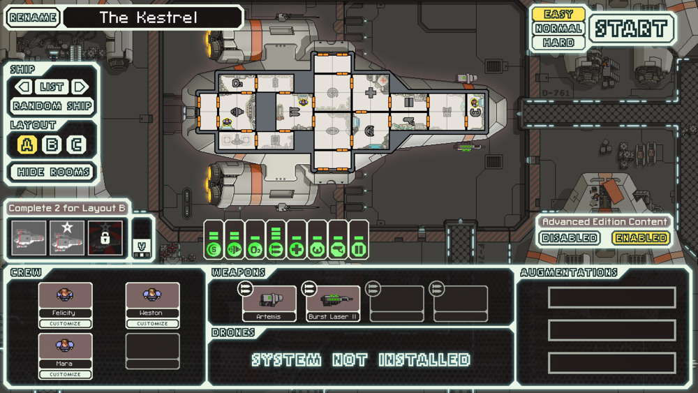
The Kestral is the most basic ship. It is the only ship you start with. The first layout includes basica systems and a 3 man Human crew. This ship begins the game with a laser weapon, and a missile weapon.
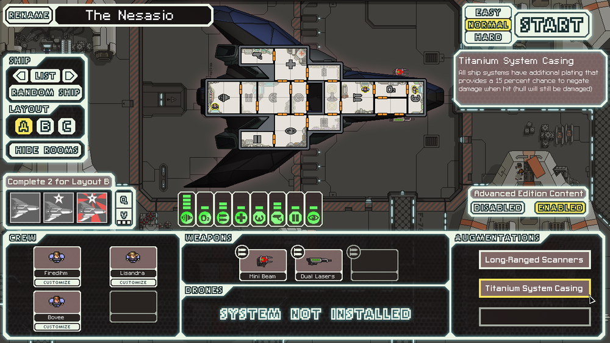
The stealth cruiser was built by the Engi. The first layout has a 3 man Human crew. This ship does not have sheilds to start, instead it has cloaking and upgraded engines. The stealth cruiser starts with a beam weapon and a laser weapon. It is also equipt with augmentations which negates 15% of damage taken, and long-range scanners
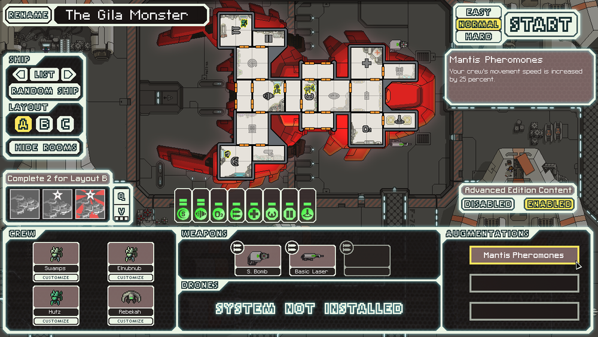
The Mantis ship (My personal best ship), layout A has a 4 man crew with 3 Mantis, and 1 Human. This ship is equipt with an extra system, crew teleportation. This system will teleport crew members to another ship to attack enemy crew and systems. You have to wait on the cooldown time (depending on the level of the system) to teleport your crew back. This ship is equipt with a bomb weapon and a laser weapon. It also includes an augmentation which makes the crew speed 25% faster
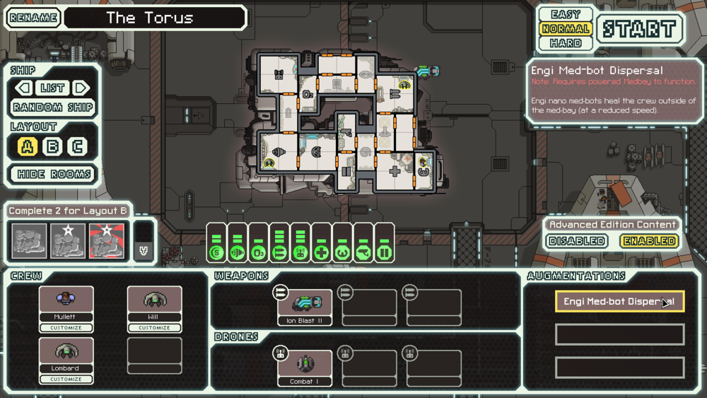
The Engi ship in my opinion is one of the most difficult ships. The initial layout of this ship is manned by a 3 man crew with two Engi and one Human. It has an additional system Drones. This Ship is equipt with an ion weapon and a combat drone. It also includes one augmentation which heals the crew outside of the medbay.
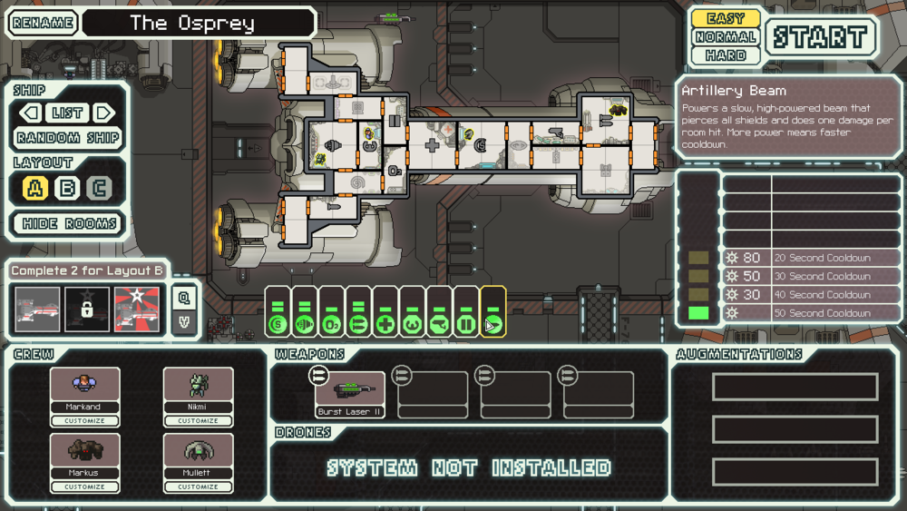
The Federation ship is the only one that includes the Artillary Beam. The initial layout of this ship has a 4 man crew with a Human, Engi, Rockman, and Mantis. It is equipt with one laser weapon as well as the artillary beam.
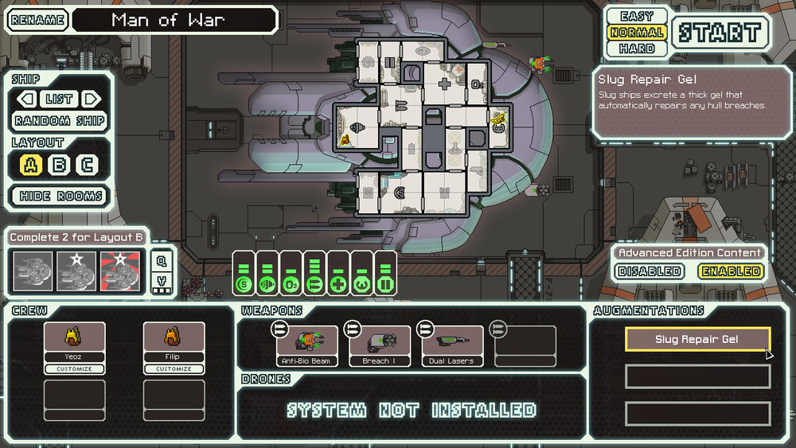
The Slug ship is designed to navigate nebulas. This first version of the Slug ship has upgraded door systems, and does not have sensors. It is manned by two slugs. This ship is equipt with an anti-bio beam weapon which targets organic material, a bomb weapon, and a laser weapon. It also includes an augmentation which slowly repairs breach damage to the ship.
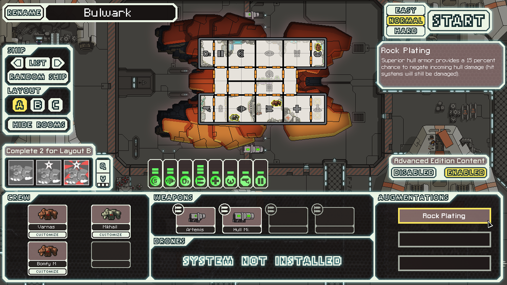
The Rock ship is one of the 2 I have not beat the game with. The starting version of the ship is manned by 3 Rockmen. It is equipt with 2 missile weapons, and an augmentation which has a 15% chance of negating hull damage.
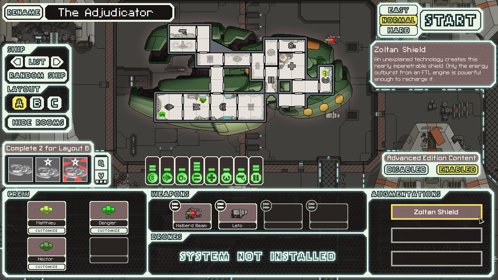
The Zolton ship is another one of my favorites. Layout A of this ship is manned by three Zolton. It has upgraded doors systems, as well as an augmentation which provides and extra sheild that cannot be penatrated by missile weapons, teleportation, or boarding drones. It is equipt with a strong beam weapon and a missle weapon.
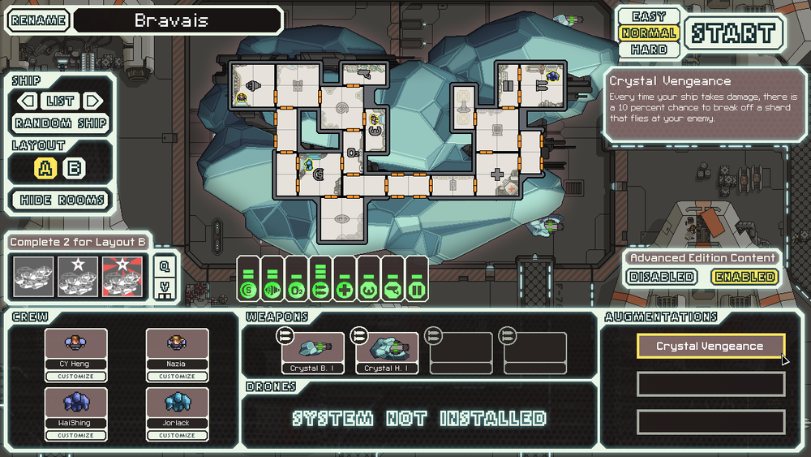
The Crystal ship is the only one that I have not unlocked. This ship must be unlocked by first stubling upon a broken stasis chamber, which then you much find the Engi which can fix it. The you recieve a Crystal crew member. Once you have the Crystal crew memeber, you much go to the rock homeworld sector and hope to find the wormhole to the secret rock sector in which you may find the ever elusive Crytal Cruiser.The first version of this ship starts with a two Human, two Crystal crew memebers. It is equipt with 2 crystal weapons and an augmentation which has a 10% chance of damaging an enemy ship after taking damage.
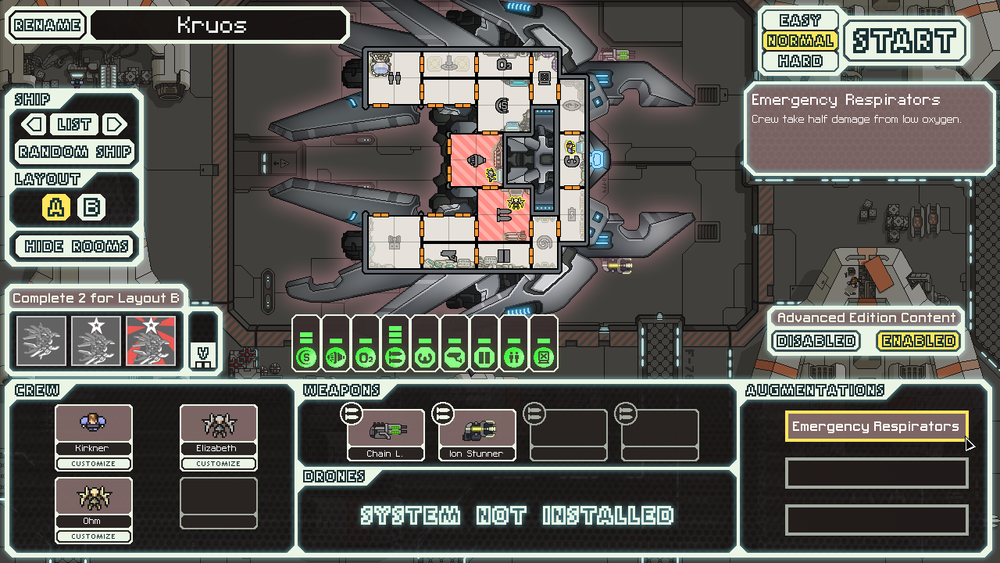
Th Lanius ship is only included in the Advanced Edition of FTL. This is a fun ship to play. It has a one Human, two Lanius crew. It includes 2 new systems cloning, which clones your crew once they die, and  which hacks one system on an enemy ship. It starts with a chain laser weapon and an ion stunner weapon, as well as an augmentation which halves the amount of damage the crew takes from low oxygen.
which hacks one system on an enemy ship. It starts with a chain laser weapon and an ion stunner weapon, as well as an augmentation which halves the amount of damage the crew takes from low oxygen.
Sectors
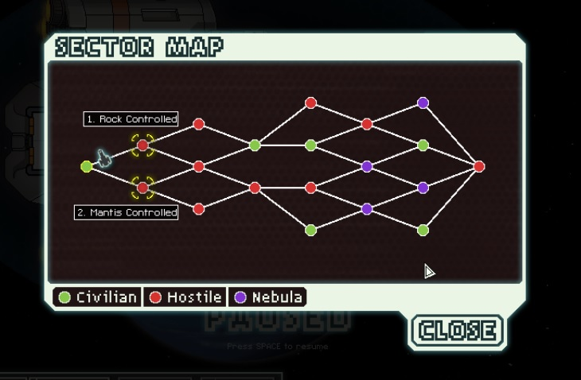
There are benifits to each differnt sector. You will encounter fewer battles in friendly sectors, but you may get less scrap (which is currency) and items. In hostile sectors you will encounter more enemies, therefor you will have more opprotunities to gather scrap. Nebula sectors have many nebulas which slow down the rebel fleet, and disable sensors. They tend to be neutral territories, and a great opprotunity to find Slug crew members.
Civilian sectors
- Civilian sector - Mostly nutral encounters.
- Engi controlled or homeworlds - Engi are sympathetic to The Federation, so there are plenty of opprotunity for scrap, and will be a mostly safe journey
- Zolton controlled and homeworlds - These sectors are a more hostile friendly territory. The Zolton are defensive, though fair.
Hostile sectors
- Mantis controlled and homeworlds - Mantis are slavers, so these sectors are a good place to find crew members by liberating the Matis slaves.
- Rock controlled and homeworlds - These sectors are neutral - hostile. They are a great way to get scrap and weapons.
- Pirate controlled - These sectors are inhabited by multiple races and are good for finding scrap and equiptment.
- Rebel controlled and stronghold - These sectors are full of Rebel scum. They are a dangerous sector, but as with most hostile sectors, lots of scrap.
- Abandoned Sector- These sectors are home of the Lanius, and contain a lot of unique events. Abandoned sectors are neutral - hostile, and are the only way to find Lanius crew.
Nebula sectors
- Slug controlled and homeworld - These sectors are especially hostile. They are a great way to get Slug crew members.
- Uncharted nebula sector - These sectors are mostly neutral. They are also home to Slugs.
Weapons
Events and obstacles